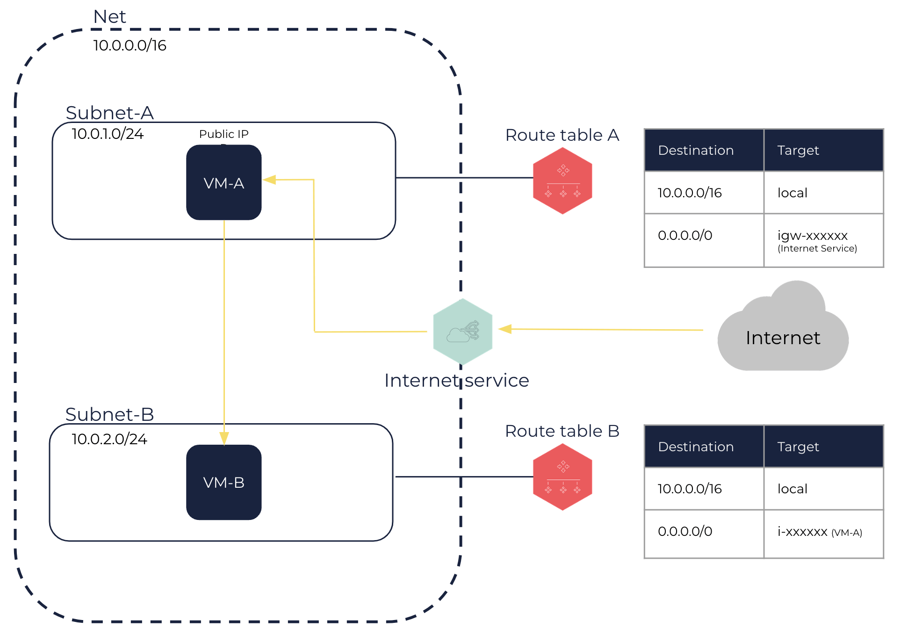

Setting Up an Appliance in a Net
For security reasons, or because of the capacity of your software solutions, you might want to delegate the control of network traffic to an appliance.
To do this, you can send all external network traffic to a VM running an appliance.
This guide explains how to set up an appliance in a Net.
-
Create a Net with 10.0.0.0/16 as IP range. See Creating a Net.
When creating the Net, do not use the
osc.fcu.enable_lan_security_groupstag. A Net with this tag is not compatible with the rest of the tutorial. -
Configuring the VM-A:
-
Create a Subnet-A with 10.0.1.0/24 as IP range. See Creating a Subnet in a Net.
-
Create an internet service and attach it to the Net. See Creating an Internet Service and Attaching an Internet Service to a Net.
-
Create a route table and link it to the Subnet-A. See Creating a Route Table and Linking a Route Table with a Subnet.
-
Add a default route in Subnet-A targeting the internet service. See Creating a Route Table.
-
Create a VM-A in the Subnet-A. See Creating VMs.
-
Allocate a public IP to your account and link it with the VM-A. See Allocating a Public IP to Your Account and Linking a Public IP with a VM or a Network Interface.
-
Connect to your appliance onto the VM-A and configure it as you need. See Accessing Your VMs.
This VM-A with your appliance now acts as a router.
-
-
Configuring the VM-B:
-
Create a Subnet-B with 10.0.2.0/24 as IP range. See Creating a Subnet in a Net.
-
Create a route table and link it to the Subnet-B. See Creating a Route Table and Linking a Route Table with a Subnet.
-
Add a default route in Subnet-B targeting the VM-A. See Creating a Route Table.
-
Create a VM-B in the Subnet-B. See Creating VMs.
This VM-B can receive the incoming traffic from the internet forwarded by the VM-A.
-

Related Pages